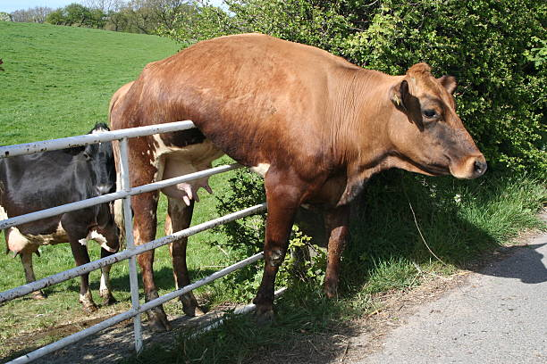

Formando Futuro
x Rubén García
¿Tu vida te satisface?

Fuente: Encuesta Nacional sobre Satisfacción Subjetiva con la Vida y la Sociedad
¿Aceptarías trabajo en cualquier lugar, aunque tenga un sueldo bajo?

Fuente: Estudio "Crisis y contrato social. Los jóvenes en la sociedad del futuro"
Creencias disfuncionales
Son conceptos erróneos que interfieren en el diseño de nuestro plan de carrera.
¿Qué estás estudiando?
¿Y qué piensas hacer con eso?
¿Cuál es tu pasión?
Dime tu pasión y te diré qué hacer.
Ya deberías saber a donde ir y cómo llegar.
Y si no, ya vas tarde.
¿Eres la mejor versión de ti?
¿Te estás conformando?
¿Qué necesitamos?
Ideas y herramientas dentro de un marco de referencia para la orientación de nuestra vida y carrera.
El "diseño de futuros" es una disciplina que utiliza métodos creativos y analíticos para explorar, visualizar y crear escenarios posibles a largo plazo, con el objetivo de informar decisiones presentes y diseñar estrategias que orienten hacia futuros más deseables.
1. Conecta los puntos
Busca señales de cambio y tendencias.
Muchas personas están estancadas y no saben cómo llegaron ahí.

Si consideras una pregunta, por ejemplo "¿Qué hago para ser ingeniero?", estás haciendo una pregunta muy general.
Si enmarcas la pregunta como "¿Qué procesos, técnicas y herramientas se consumen en la solución de problemas de ingeniería?", puedes obtener respuestas interesantes que tienen el potencial de generar oportunidades.
Investigación etnográfica
Podemos crear más preguntas similares utlizando los siguientes puntos culturales que nos ayudan a describir la existencia humana:
- definir
- conectar
- relacionar
- crear
- consumir
- destruir
Ingresa el siguiente prompt en algún LLM:
Si consideras una pregunta, por ejemplo: *"¿Qué hago para ser ingeniero?"*,
estás haciendo *una* pregunta muy general.
Si enmarcas la pregunta como:
*"¿Qué procesos, técnicas y herramientas se usan en la solución de problemas de ingeniería?"*,
puedes obtener respuestas interesantes que tienen el potencial de generar oportunidades.
Necesito tu ayuda para crear más preguntas similares que utilicen los siguientes verbos:
* *definir*
* *conectar*
* *relacionar*
* *crear*
* *consumir*
* *destruir*
Asegúrate de que las preguntas estén orientadas al campo de la ingeniería.
Si algo grandioso va a ocurrir, tiene que empezar en algún lado. - Mary O’Hara-Devereaux
¿Qué otras preguntas se te ocurren?
Puedes pedirle ayuda a algún LLM.
2. Identifica a tus variantes del multiverso.
¿Cuántas vidas estás viviendo?
Consideraremos 3 arquetipos del futuro:
- Escenario de continuidad
- Escenario de colapso
- Escenario de transformación
Su hijo nunca llegará lejos, dijo la maestra a la mamá del futuro hombre bala. Lenin Pérez Pérez
— microcuentos (@microcuentos) December 26, 2015
Describe cada escenario en una pequeña frase.

Cualquier idea sobre los futuros debe parecer ridícula al principio.
-Jim Dator
3. Re-imagina el futuro
Haz prototipos y explora.
Un prototipo
Es barato de construir, fácil de implementar y ayuda al aprendizaje.
Nos ayuda a saber qué podría salir mal.
Sirve para desmentir lo que asumes.
Exploración vivencial
Haz voluntariado.
Únete a comunidades.
Asiste a eventos gratuitos.
Toma cursos o talleres de los temas que te interesan.
En la vida tenemos que aprender 3 cosas :
— 🅱️🅾️🅰️🐍 (@Alexis__Anel) May 9, 2020
- Inglés
- Usar Excel
- No creerle a nadie que puedes generar ingresos desde la comunidad de tu casa con tan solo unos minutos al día .
4. Crea alianzas
Involucra a otros con tus ideas.
Colaboración radical
Busca personas que estén viviendo la vida que quieres.
Hazles preguntas interesantes.
Expón tus suposiciones.
Imagina que es como pedir indicaciones.
¿Cuándo fue la última vez que recomendaste algo?
Da una recomendación sobre algún tema que te pregunten o menciona si conoces a alguien que sepa.
5. Toma buenas decisiones y defiéndelas
Reune las opciones, aterrízalas y crea estrategias.
¿Qué pasa cuando tienes demasiadas opciones?
Me desespera mucho cuando hay demasiados sabores de helado para escoger.
— Pandita Color Rojo. (@loli_watermelon) August 1, 2017
¡Terminas pidiendo lo mismo de siempre!
¿Cómo transicionamos desde el presente a un futuro deseable?
- Crea una base de conocimiento.
- Identifica señales y tendencias.
- Elige un escenario apuesta.
- Suelta los demás y fluye.
- Confía en tu instinto.
Las hipersticiones son circuitos de retroalimentación positiva que incluyen a la cultura como componente... la (tecno)ciencia experimental de profecías autocumplidas.-Nick Land
Carta a mi yo del futuro
¿Qué pasa si no pensamos en el futuro?
El presente nos esclaviza.
Somos vulnerables ante el desastre.
Alguien más decide por nosotros.
No podemos tomar decisiones tácticas.
Decimos que "por algo pasan las cosas".
Ninguna estrategia va a sobrevivir el primer contacto con la realidad.